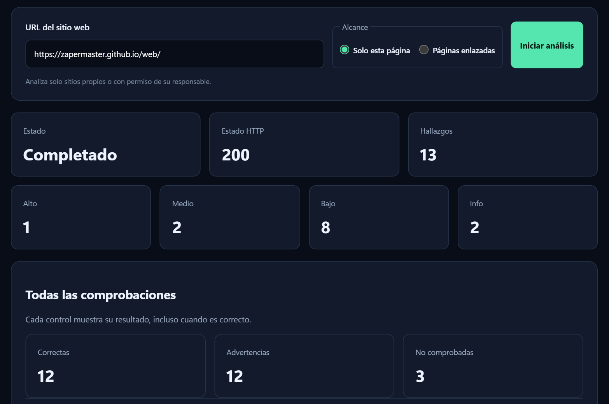
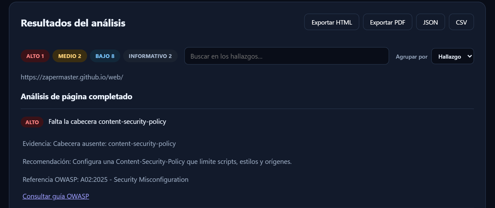

¿Es segura tu web? Compruébalo en segundos
WebAudit Sec analiza una página o todo un sitio y explica cada problema con su evidencia, cómo solucionarlo y su referencia OWASP.

Qué analiza
Decenas de comprobaciones agrupadas por categoría. Cada control muestra su resultado, también cuando todo está bien.
Cabeceras de seguridad
CSP (también report-only, nonce y hash), HSTS, X-Frame-Options, Referrer-Policy, Permissions-Policy y CORS.
Cookies
Secure, HttpOnly, SameSite, prefijos __Host- y __Secure- y sesiones que duran demasiado.
TLS y certificados
Certificados caducados, autofirmados o de otro dominio, cadena incompleta, versiones aceptadas y revocación (OCSP o CRL).
Contenido de la página
Contenido mixto, integridad (SRI) en scripts y estilos de terceros e iconos servidos por HTTP.
DNS y correo
Registros SPF, DMARC y CAA para evitar suplantaciones y certificados no autorizados.
Servidor
Información expuesta, versiones sin soporte, métodos HTTP peligrosos y security.txt.
Archivos expuestos
.git, .env, copias de seguridad, phpinfo, server-status y otros archivos que no deberían verse.
Rastreo del sitio
Sigue los enlaces del mismo dominio y el sitemap.xml, con límites que tú eliges.
Resultados que se entienden
No solo dice qué falla: explica por qué importa y cómo arreglarlo.
- Evidencia y recomendación para cada hallazgo, con su referencia OWASP.
- Severidad clara para saber qué arreglar primero.
- Comparación con el análisis anterior del mismo sitio.
- Historial de todos tus análisis guardado en el equipo.
- Exporta el informe a PDF, HTML, JSON o CSV, en español o en inglés.

Dos formas de usarlo
Las dos comparten el mismo motor de análisis: elige la que te resulte más cómoda.
App de escritorio
Un programa de Windows listo para usar. Descárgalo, ábrelo y escribe la dirección de la web.
Descargar WebAudit-Sec.exeVersión web
Un servidor con FastAPI y una interfaz en el navegador. Con Python instalado:
pip install -r requirements.txtpython -m web → http://127.0.0.1:8000
Úsalo de forma responsable. Analiza solo sitios propios o con permiso de su responsable. WebAudit Sec hace comprobaciones pasivas y ligeras, pero analizar webs ajenas sin autorización puede no estar permitido.
Preguntas frecuentes
¿Es gratis?
Sí. WebAudit Sec es software libre con licencia MIT: puedes usarlo, estudiar su código y modificarlo.
¿Ataca o daña la web que analiza?
No. Hace peticiones normales, como un navegador, y comprueba la configuración. No intenta explotar vulnerabilidades.
¿Puedo analizar todo un sitio, no solo una página?
Sí. Elige «Páginas enlazadas» y seguirá los enlaces del mismo dominio y el sitemap, con un límite de páginas configurable.
¿En qué idiomas está?
La interfaz y los informes están en español y en inglés.
Windows dice «Windows protegió su PC» al abrirlo
Ocurre con los programas nuevos que aún no tienen firma digital. Pulsa «Más información» y después «Ejecutar de todas formas».